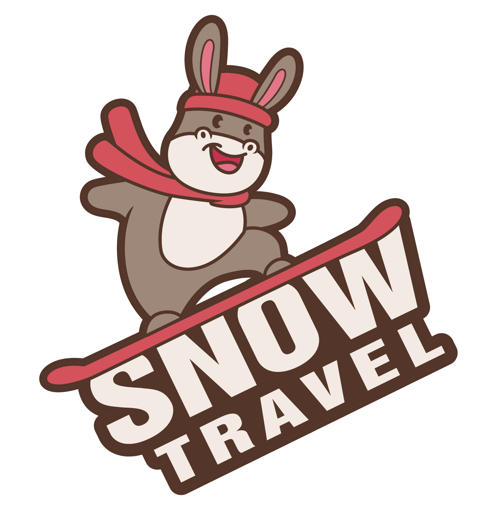
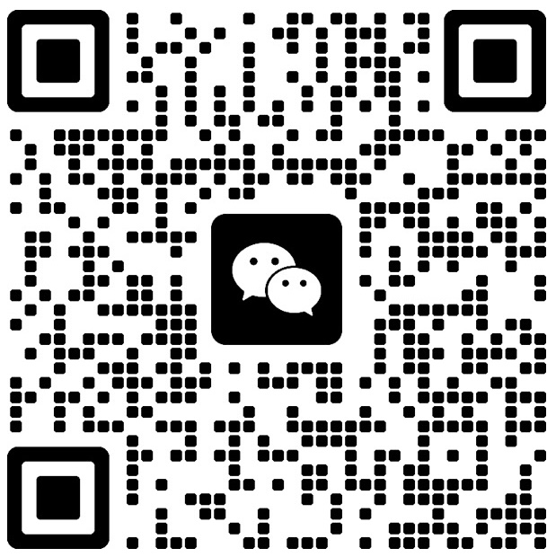
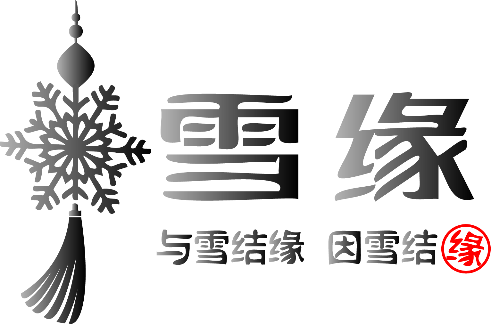

适合客人
适合第一次滑雪的客人、亲子家庭、希望用中文沟通的客人，以及已有基础、希望进行动作修正或进阶提升的客人。

雪旅Snowtravel课程内容会根据客人的滑行经验、人数、年龄、单板或双板需求，以及教练档期综合确认。
适合第一次滑雪的客人、亲子家庭、希望用中文沟通的客人，以及已有基础、希望进行动作修正或进阶提升的客人。
可咨询安排单板滑雪、双板滑雪、初学入门、亲子课程和进阶提升。具体课程类型需根据预约日期和教练档期确认。
我们主要面向中文客人提供滑雪教学；部分教练也可使用英文、粤语等其他语言教学，具体可在预约时确认。
适合。课程可根据客人的滑行经验安排单板或双板教学，第一次滑雪的客人也可以从基础动作和安全习惯开始学习。
可以根据预约日期、人数、滑行水平和教练档期确认中文滑雪教练安排。我们主要面向中文客人提供滑雪教学；部分教练也可使用英文、粤语等其他语言教学，具体可在预约时确认。
部分教练可使用英文、粤语等其他语言教学，具体需根据教练安排在预约时确认。
可以。课程可安排单板或双板，建议预约时说明滑雪类型、人数和滑行经验，最终根据教练档期确认。
可先使用滑雪学校页价格计算器预估，最终价格与教练档期以人工确认为准。
雪缘中文滑雪学校已在 Tomamu 星野完成官方登记，可在雪场规则允许的范围内合规提供滑雪教学服务。
点击对应的联系方式可一键复制账号。


Tomamu 星野中文滑雪课
雪缘中文滑雪学校可在 Tomamu 星野安排中文滑雪教学，适合第一次滑雪的客人、亲子家庭、单板或双板入门，以及希望修正动作、提升滑行技术的客人。如果你正在 Tomamu 星野寻找中文滑雪教练，雪缘中文滑雪学校可根据日期、人数、滑行水平和教练档期，为你确认合适的单板或双板滑雪课程。